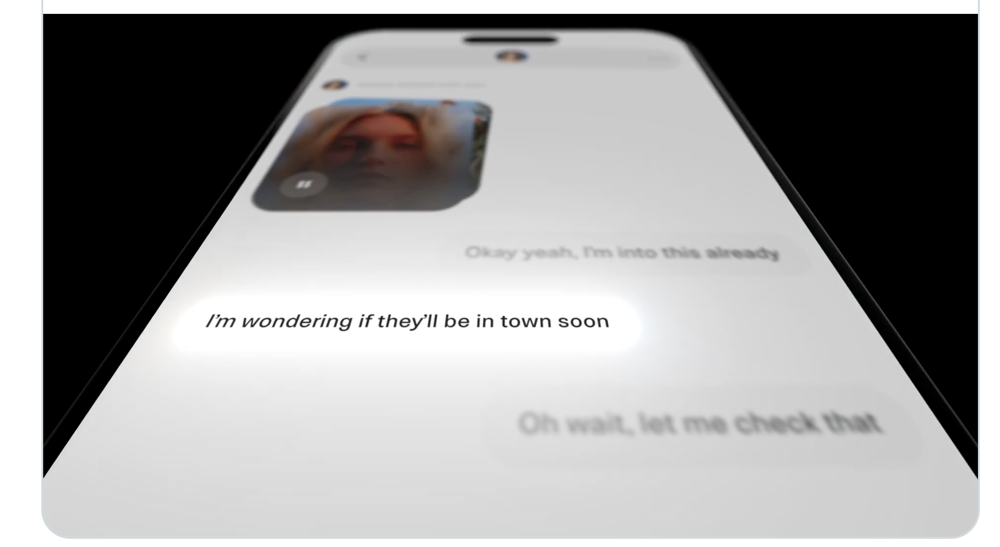
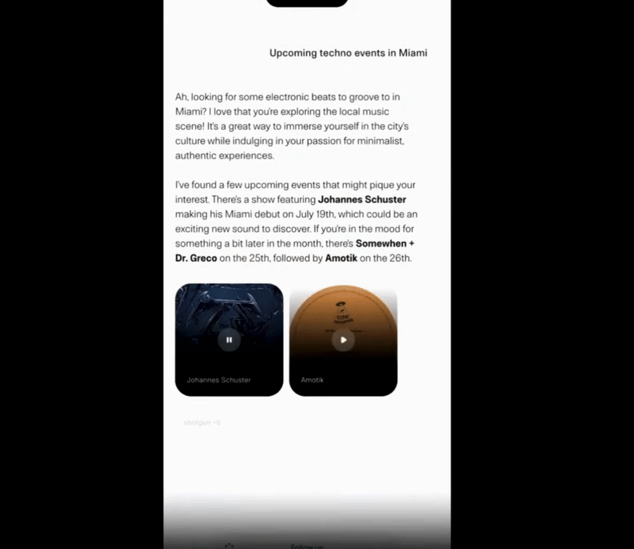
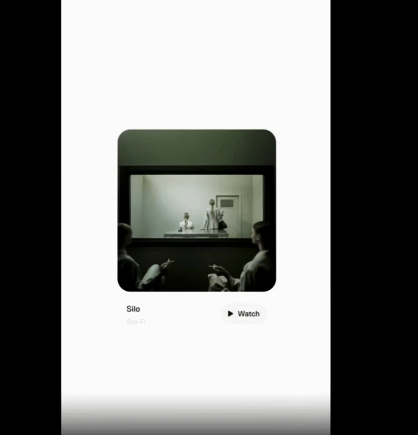
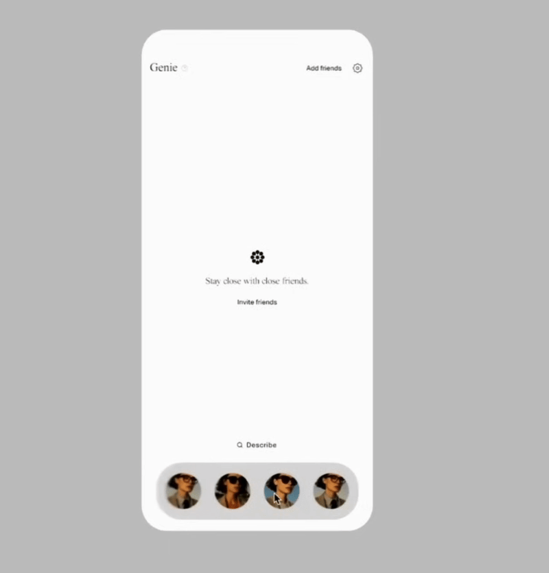
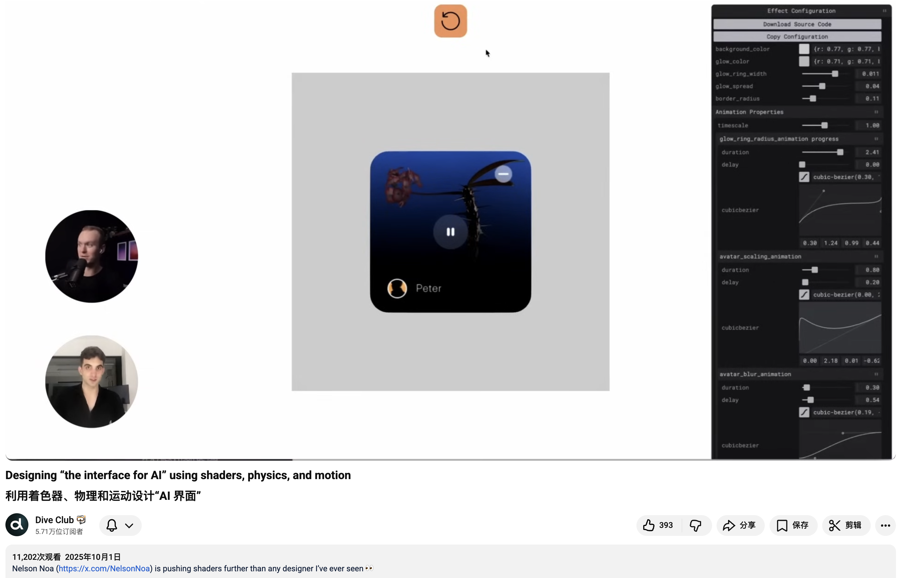
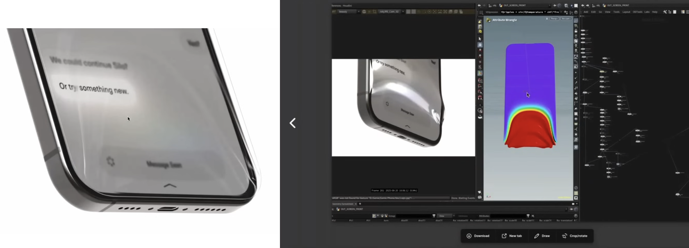
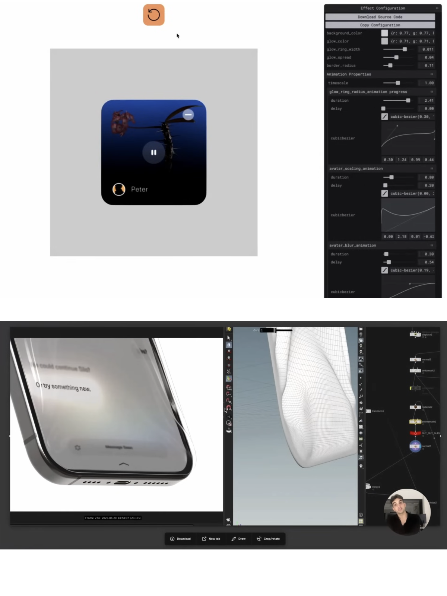

大多数 AI 产品还停留在「一个聪明的聊天框」的阶段，文字进、文字出。设计师 Nelson Noa 在 Genie 这个产品上做了件少有人做的事：用光、物理和动效，给 AI 造一套全新的界面语言。

Genie 在做一件别人没做的事
Genie 是一个 AI 产品，目标是让 AI 不只是回答问题，而是变成嵌在系统里的一层「操作层」。Nelson 把这套界面语言叫做 「Grammar of AI」——AI 的界面语法。
听起来有点玄，他说得很直白：现在的 AI 界面，比如 ChatGPT，本质就是一个很聪明的聊天框。你问它，它回你一大段文字。这件事没错，但它缺了点东西——缺情感，缺触感，缺一种「我感觉到 AI 在这里」的存在感。

所以他想做的是：当用户要的是图片、视频、音乐、地点的时候，能不能给比一段文字更直观的东西。搜地址，就直接给一张地图。生成一张图，就让图带着「这是 AI 想出来的」那种气质冒出来。
从熟悉的东西里找语法
要造一套新语言，不能凭空造。Nelson 的做法是先研究熟悉的事物。
Siri 出现这么多年，所有 AI 工具有一个共同点——光。你想到 AI，脑子里就会冒出彩色的、流动的、发光的东西。光几乎是 AI 在视觉上的本能联想。
还有一个是 Apple 的 3D Touch。按下去，屏幕有反馈，颜色会被手指「吸」走，界面有轻微的波动。这种触觉上的存在感，正好可以借给 AI——让 AI 不再是一个被动等指令的盒子，而是一个能被「捏」、被「按」、有重量、有反应的东西。
光 + 物理触感，这两件熟悉的事，就成了 Genie 设计语言的两块地基。
光：AI 思考的可视化
光在 Genie 里不是装饰，是用来暗示「AI 正在思考、生成、理解」的语义符号。Nelson 给了几个具体的例子。

AI 生成的图片，加载方式必须和普通图片不一样。普通图片就是从上到下刷出来，没什么可说的。但 AI 生成的图，得让用户一眼看出来：这是 AI 大脑思考出来的。所以它会带着光感冒出来，像有什么东西刚刚在屏幕里被想明白了。

AI 学习的反馈也用光表达。Nelson 的思路是：每一次用户和 AI 对话，AI 其实都在从用户身上学东西。这件事原本是完全不可见的，发生在云端的某个推理过程里。Genie 把它做成动态岛的液态分解，伴随一圈光波溢出。然后再把这个复杂的视觉收回成一个简单的小圆点，像在说一句：「嘿，我来了，我刚学到了点新东西」。

InputBar 也参与到这套语言里。AI 有 MemoryContext，也就是上下文记忆，那界面就得能暗示出「我看见了、我理解了」。Genie 的 InputBar 上升的时候，会照亮周围的内容，让光在元素之间形成一种关联——输入框不是孤岛，它和屏幕上的内容是连着的。

按住屏幕上的文字，颜色会被手指吸走，屏幕轻微波动，还有强烈的震动反馈。这一下你就能感觉到——内容是有重量的，是可以被捏起来的。

物理：让内容真的「掉下来」
光解决的是「AI 在想什么」，物理解决的是「AI 把东西给你」的那一刻。
场景切换被做成了一种「传送门」的感觉。Genie 会持续在后台为用户筛选内容，生成一组建议场景——音乐、地点、电影等。用户左右滑动，像在科幻片里穿过一个个传送门，快速从一个建议跳到另一个。这个动效不是为了酷，而是想传达：AI 在背景里一直帮你过滤世界的信息。

从后台唤醒的方式也带物理感。Genie 不是直接淡入出现，而是像有一个真实的物体掉落在屏幕上，伴随涟漪扩散开来。那一瞬间你真的能感觉到这个元素的重量飞过来。

卡片也参与进来。卡片下拉会形变，横滑的时候下面的内容也跟着动。这背后是真的在跑物理仿真，每一片内容都像被赋予了质量和弹性。

动态岛在多个功能里被反复用到——相机、通知，都会从那里召唤出来。Nelson 的意图很清楚：Genie 不想只做一个 App，它想做一个嵌在系统里的层，能从手机的其他部分学到东西、长出反应。

触感：把界面变成一块可以「捏」的表面
光和物理之上还有一层，是 Nelson 反复强调的——把整个 UI 当成一个可触摸的表面来设计。
界面会对手指的按压、滑动产生波纹、吸附、弹性这些反馈，再配合光感和震动，让用户感觉自己是在「捏」内容，而不是点按钮。轻按或者双击内容，会触发液体般的形变、光波和物理反馈，代表喜欢、分享这类操作。动态岛会随之轻微位移，暗示它不只是个状态条，更像系统操作层的一部分。
怎么把这些做出来
这种程度的视觉效果，SwiftUI 是做不动的。Nelson 团队的实现路径很硬核。
视觉探索是在 After Effects 和 Houdini 这种影视级动效工具里完成的。但这些工具里跑得再漂亮，最终也要落到真机上。落到真机的标准被他们定得很狠：接近 98% 还原视频里的效果。

到设备上的实现走的是 Metal、WebGL、three.js 这些底层渲染路径，核心是用 DSL shader 写出来的。Nelson 自己就是这块的熟手，他说设计师在这方面有训练，才有可能把脑子里的效果精准实现出来，而不是丢给工程师去猜。

性能是另一个硬骨头。这么多 shader 跑在手机上，普通做法分分钟把设备烤热。他们的解法很巧：把界面区域转成纹理，做一次「smart screenshot」，在底层对这张纹理做变形和特效，再映射回 SwiftUI 视图。本质上是用一张已经渲染好的图当画布，避免反复重绘整个界面层级。

加上对 GPU 性能的持续调优，砍掉一切不必要的开销，最后做到了手机不发烫——这件事在做过 shader 的人眼里，是真正的功夫。
强动效只用在关键时刻
看到这里很容易误会：是不是 Genie 全屏都在动？
不是。Nelson 专门强调过一句话：「不能做成 Flash 2.0」。这些强烈的动画只在关键时刻出现——AI 学到新东西、生成新内容、场景切换、按压反馈这些重要时刻。大部分时间，界面仍然保持简洁实用。
Nelson 对极致动效还有一层判断。他认为这种对细节的「过度投入」是一种长期资产——用户即使说不出原理，也能感受到产品里的用心和品质。他拿日式设计、做寿司、高定服装来做类比：那种对工艺的执着，是会被人感知到的，哪怕讲不清为什么。
这套语言给 AI 设计的启示
Genie 这件事如果只看动效，会觉得很漂亮。但放回 AI 产品设计的语境里看，它在做一件更底层的事——为「AI 是什么」找一种视觉上的表达。
聊天框时代的 AI，存在感全靠文字。文字之外，AI 是不可见的。Nelson 给出的答案是：让 AI 通过光被看到、通过物理被感觉到、通过触感被回应。当 AI 学到东西，让光告诉用户；当 AI 推内容过来，让物理告诉用户；当用户去触碰 AI 生成的内容，让界面像有生命一样回应。
这件事的代价很大，需要 shader、需要 GPU 调优、需要设计师懂数学和工程。大多数团队做不到，所以大多数 AI 产品仍然是聊天框。但 Nelson 已经把这条路走通过一次了——AI 是可以有自己的界面语法的，只是它需要一个愿意亲手写 shader 的设计师。